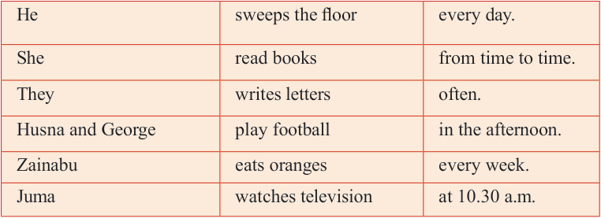

English for Secondary Schools Student’s Book Form One, printed page 141
consultation room in the Out-Patients Department (OPD) where I attend patients who have registered for consultation. This task takes the rest of the day as there are always many outpatients. I only leave the room for tea break at 10.30 am and lunch break at 1.00 pm. I always take my breakfast and lunch at the hospital canteen. I go back home at 4.30 pm.
Questions
1.
What does Doctor Rose do when she arrives at the hospital?
2.
When does she do the ward round?
3.
What time does she break for tea and lunch?
(c) Make as many correct sentences as you can by picking words from each column in the table below. One word can be used more than once.
| He | sweeps the floor | every day. |
|---|---|---|
| She | read books | from time to time. |
| They | writes letters | often. |
| Husna and George | play football | in the afternoon. |
| Zainabu | eats oranges | every week. |
| Juma | watches television | at 10.30 a.m. |

(d) Use the following table to write a paragraph about your daily routine activities in the afternoon and evening. Use the following phrases to make the paragraph:
After that, In the morning/afternoon/evening, At (time), Then, Next, and then When I , from (time) to (time)